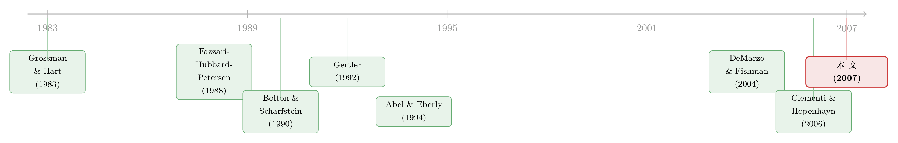

好表现的奖励，不是奖金，而是「明天更大的盘子」——代理冲突如何写出公司的投资节律
本文读的是 DeMarzo & Fishman (2007, Review of Financial Studies)：当代理问题（agency problem）限制了企业的外部融资，最优的长期契约会让投资跟着经营者的「业绩」走——业绩好就追加投资、业绩差就收缩，而且这种联动具有持续性（投资正序列相关）。关键在于，驱动这条规律的不是「内部资金更便宜」，而是业绩好之后，经营者分到的未来现金流份额上升，代理损失被压小，投资的回报率随之上升。更妙的是，作者证明这套逻辑对一大类代理模型都成立。
1 一个老问题，和一个被讲了三十年的「标准答案」
公司金融里有一个几乎人尽皆知的经验事实：企业的投资，和它的现金流绑得很紧。手头宽裕的年头多投，手头紧的年头少投。Fazzari, Hubbard 和 Petersen 在 1988 年那篇被引到天荒地老的文章里，把这件事摆上了台面——投资对现金流敏感 (investment-cash flow sensitivity)，而且这种敏感对那些「看起来更缺钱」的公司更强。
对这个事实，教科书给了一个标准答案，而且这个答案讲了三十年：因为外部融资比内部资金贵。信息不对称、代理成本、发行费用……种种摩擦让外部的每一块钱都背着一个溢价。于是内部现金流多了，等于公司的资金成本 (cost of capital) 下来了，原本因为太贵而放弃的项目，现在划算了，投资自然上去。
这个故事干净、直观，也确实抓住了一部分真相。但它有一个隐含的味道：现金流之所以重要，是因为它便宜。换句话说，矛盾出在融资这一头——分母（贴现率）的那一头。
DeMarzo 和 Fishman 这篇 2007 年发表在 RFS 上的文章，想说的是另一件事。
他们的核心论断可以浓缩成一句反直觉的话：在他们的模型里，是投资的「回报」在随现金流变化，而不是投资的「成本」。 同样多出来一块钱内部现金，标准故事说它降低了你的资金成本，这篇文章说它抬高了你这台机器的回报率。分子动了，不是分母动了。
为什么会这样？这就要从一个静态的代理问题，怎么被「拉长」成一份动态契约讲起。
2 从「发奖金」到「给股份」：一步关键的跨越
先把场景搭起来。一家公司，由一个风险中性 (risk-neutral) 的经营者（agent，下称「经理人」）来运营，背后是同样风险中性、资金无限的投资者。问题出在哪儿？经理人手里有一个不可观测的行动 \(z_t\)：他可能私下观察到公司的真实现金流并把一部分侵占 (divert) 进自己口袋；也可能是他付出的努力别人看不见。无论哪种，结果都一样——要让他「替投资者好好干活」，就得给他激励，而给激励是要花钱的。
在一个静态（只有一期）的代理模型里，激励怎么给？很简单：用现金奖励好的业绩。业绩好，多发；业绩差，少发。这就是「按业绩发奖金」。
但真正关键的一步，发生在我们把时间拉长、允许签长期契约 (long-term contract) 的那一刻。
在动态环境里，奖励一次好业绩，除了当期多发现金，还有第二件武器：把经理人未来现金流的份额调高。
这第二件武器为什么有用？想一个极端：如果你把整家公司白送给经理人，让他独享全部现金流，那他还会侵占谁、偷懒给谁看？代理问题在那一刻烟消云散了。所以「提高经理人对未来现金流的份额」这件事，本身就在缓解代理冲突。
于是一条因果链被打通了：
- 经理人业绩好 → 作为奖励，他分到的未来现金流份额上升；
- 份额上升 → 代理损失被压小；
- 代理损失变小 → 这家公司投资的回报率上升；
- 回报率上升 → 最优的做法是追加投资。
业绩差则一切反过来：份额被收回、代理损失加重、投资回报下降、于是收缩。一来一回，投资和业绩之间就长出了一个正相关。而因为「经理人的份额」是一个有粘性、会延续的状态变量，这份相关也跟着延续下来——这就是为什么模型会预言投资的正序列相关 (positive serial correlation)。
这就是全文的「一个核心」。后面所有的定理、所有的应用，都是在把这一条链路讲得更结实、更普适。
3 真正聪明的地方：它对「哪一种代理问题」都成立
如果文章只是为某一个具体的代理模型（比如「经理人偷现金流」）算出了上面这条规律，那它是一篇不错的文章。但 DeMarzo 和 Fishman 想要的更多。他们问了一个更野心的问题：
接着，一个自然的问题是——这条「业绩好→投资多」的规律，到底是某个特定代理模型的巧合，还是代理问题的一般性质？
答案是后者。他们证明：只要某个代理问题的静态版本满足下面两个温和的条件，上面那套投资动态就成立——
- 条件 (i)：经理人的收益，随他所创造的现金流增加而增加；
- 条件 (ii)：经理人的收益，随他的保留效用 (reservation utility) 增加而增加。
这两个条件平淡得近乎显然，却恰好是绝大多数公司金融静态模型共有的性质。条件 (i) 说的是「现金流是一个该被奖励的业绩指标」——于是当期现金流高，投资就该高，静态里的「业绩—薪酬」关系，被翻译成了动态里的「现金流—投资」关系。条件 (ii) 说的是经理人的事前与事后收益正相关——在动态里，这意味着一个今天预期能拿高收益的经理人，会被给到更高的未来现金流份额，这份「份额上的持续性」最终变成了「投资上的持续性」。
正因如此，文章可以底气十足地说：无论你信的是「私下侵占现金流」、「可观测但仍可侵占的现金流」，还是「隐性的努力成本」，结论都不变。这是一种难得的稳健性 (robustness)——它把一个看似关于「特定摩擦」的结果，提升成了关于「代理问题这一类摩擦」的结果。
4 模型：把契约「倒着」解出来
这是一篇彻头彻尾的理论文章，所以值得把骨架一根根拆给你看。下面用到的符号尽量贴合原文。
4.1 谁更着急，谁就需要融资
一段消费流 \(\{y_t\}\)，在经理人眼里值
$$\sum_{t\in T} e^{-\gamma t}\,\mathbb{E}[y_t],$$
在投资者眼里值
$$\sum_{t\in T} e^{-r t}\,\mathbb{E}[y_t],$$
其中 \(r\) 是无风险利率，\(\gamma \ge r\)。这个不起眼的 \(\gamma \ge r\)，是整篇文章的第一块发动机：经理人比投资者更没耐心。他要么因为初始财富 \(Y_0\) 不够覆盖启动投资 \(K\)，要么因为太想提前消费，总之他有动力去找外部融资——而一旦找融资，代理问题就登场了。再加上经理人有有限责任 (limited liability)（每期消费不能为负）、并且随时可以一走了之拿到被标准化为 0 的外部选项，这两条合起来意味着：为了激励他，往往得让他拿到正的租金 (rents)。
4.2 「规模」是怎么长大的
投资在这里被建模成「每期把公司放大或缩小」的决定。用规模 (scale) \(\theta\) 度量公司大小（想象成门店数、员工数）。规模的演化是乘法式的：
$$\theta_t = \theta_{t-}\, g_t, \qquad \theta_{0-} = 1,$$
这里 \(\theta_{t-}\) 是期初、未追加投资前的规模，\(g_t\) 是增长因子，\(g_t - 1\) 就是增长率：\(g_t>1\) 扩张，\(g_t<1\) 收缩。要实现增长 \(g_t\)，本期需要投入
$$c_t(g_t)\,\theta_{t-},$$
并规定 \(c_t(1)=0\)（不投资就维持原规模）。仿照 Abel & Eberly (1994)，作者允许买入价和卖出价不同（部分乃至完全的不可逆性 (irreversibility)），也允许带固定成本的调整成本——于是 \(c_t\) 不必可微、甚至不必连续。为处理不可分性，他们用「凸包 (convex hull)」把成本函数凸化：
$$c_t(g) \equiv \min_{\tilde g}\ \mathbb{E}\!\left[\hat c_t(\tilde g)\right]\quad \text{s.t.}\quad \mathbb{E}[\tilde g]=g,\ \ \tilde g\ge 0.$$
凸化之后 \(c_t\) 是凸的、扩张的边际成本递增，且 \(\lim_{g\to\infty} c_t'(g)=\infty\) 以排除无限扩张。这里有一个常被忽视、却很重要的细节：正因为投资不可逆、且当期规模直接决定下期规模，即便没有任何代理问题，投资本身也已经是一个动态问题。这一点把本文和 Clementi-Hopenhayn、Quadrini、Gertler 那些「资本一期折旧光、增长全靠代理松动」的模型区分开了。
4.3 用「延续函数」把历史压成一个数
求解最优契约靠的是动态规划 (dynamic programming)。任意时点，契约给经理人和投资者各自一个期望贴现的延续收益 (continuation payoff)。对给定的经理人延续收益 \(a\)，最优契约要让投资者的延续收益最大化。把所有可实现的 \((a,b)\) 组合（\(a\) 是经理人收益，\(b\) 是投资者收益）收集成收益可行集 \(\Sigma_t\)，它的上边界就是延续函数。这是全文最核心的对象，值得单独标注：
有了 \(b_t^e(\cdot)\)，整份契约的行为就可以写成一个状态变量（经理人被许诺的未来收益 \(a\)）的函数，而不必再去追踪冗长的历史。作者的做法是从期末往期初「倒着」解：先刻画期末的 \(b_t^e\)，再依次往前推到发钱前的 \(b_t^d\)、投资决策前的 \(b_t^I\)、以及代理问题发生前的 \(b_t^y\)。激励相容 (incentive compatibility) 则要求经理人在给定契约下选的策略是最优的：
$$A_t\big(g^t,d^t,z^t\big) \;\ge\; A_t\big(g^t,d^t,\hat z^t\big)\quad \text{for all feasible } \hat z^t.$$
终期 \(T\) 没有未来，\(\Sigma_T=\{(0,0)\}\)，\(b_T^e(0)=0\)、其余为 \(-\infty\)。整套递归就从这里点火，一路倒推回来。
4.4 两个定理，四条结论
在这个框架上，作者给出两条核心定理：
- 定理 1 把投资与给经理人的现金支付，挂到当期经营现金流上；
- 定理 2 刻画投资的跨期 (intertemporal) 性质。
它们一起兑现了文章开头那四条（在控制了当期投资机会之后的）结论：
- 当期现金流高 → 当期投资高；
- 当期投资随过去的现金流与过去的投资递增 → 投资正序列相关；
- 投资对现金流的敏感度，对小公司更高；
- 经理人只有在公司达到目标增长率（即现金流越过某个阈值 (threshold)）时，才拿到现金支付。
请注意，这是理论命题，所以「结果」是符号与单调性，而不是回归系数或 t 值——这一点必须诚实交代：文中没有、也不该有实证意义上的量级。它给的是干净的比较静态方向。
5 再加一点结构：资本结构、分红与「谁能活下来」
到此为止，结论都是关于「投资」的。但只要再给代理问题添一点结构，作者就能把投资、资本结构 (capital structure) 与分红 (dividends) 串起来。他们把通用解套进三个道德风险设定——两个现金流侵占模型 + 一个隐性努力模型——并把代理冲突解读为「内部股东 vs. 外部债权与股权持有人」之间的矛盾。于是又长出四条结论：
- 投资对现金流的敏感度，对不分红的公司更高；
- 小公司更不可能分红；分红只在现金流越过阈值时发生（这与 Fama & French (2001) 记录的「分红的公司更大、更成熟」遥相呼应）；
- 杠杆更低的公司投资更多、也更可能分红；
- 净值 (net worth) 更高的公司，存活率更高。
如果把代理冲突换个解读——经理人 vs. 外部证券持有人——那么上面关于「分红」的结论，就平移成关于经理人薪酬/奖金的对应结论。同一套数学，两副面孔。
值得停下来体会的是第 3、6 条与「小公司」的关系。标准融资约束故事也预言「小公司投资—现金流敏感度更高」，但理由是「小公司外部融资更贵」。这篇文章给的理由完全不同：小公司、低净值、不分红，意味着代理租金在它的价值里占比更高，于是「奖励经理人份额」对投资回报的撬动更猛——敏感度高，是因为分子（回报）对业绩更敏感，而不是因为分母（成本）更高。两套机制在数据上长得像，在经济学上却南辕北辙。
6 文献脉络
把这篇文章放回它生长的那片土壤，脉络其实很清晰。
最上游是委托—代理 (principal-agent) 理论的奠基，Grossman & Hart (1983) 把静态道德风险问题的结构讲透。与此同时，实证那一头，Fazzari, Hubbard & Petersen (1988) 把「投资—现金流敏感度」推成了公司金融的中心议题，也由此引出了那场关于「敏感度到底意味着什么」的长久争论（Hubbard (1998) 对这条文献做过经典综述）。

接着，一批学者开始把代理问题动态化、并嵌入企业的成长。Bolton & Scharfstein (1990) 用代理冲突给出了一套基于财务契约的理论；Gertler (1992) 的两期模型、以及后来 Quadrini (2004)、Clementi & Hopenhayn (2006) 的多期模型，都让经理人私下观察并可侵占有风险的现金流——增长来自代理约束随时间被放松。但在这些模型里，撇开代理问题，投资本身往往是个静态问题（资本一期折旧光、或可按账面值随时转手、无调整成本）。
DeMarzo 和 Fishman 站在两条线的交汇处。一方面，他们沿用自己 DeMarzo & Fishman (2004) 的最优长期契约框架（那篇正是把债、信贷额度与股权从一个代理问题里「长」出来的工作，本博客写过：《把债、信贷额度和股权，从一个代理问题里「长」出来》）；另一方面，他们借鉴 Abel & Eberly (1994) 的投资技术，把不可逆性与（含固定成本的）调整成本认真地放进模型，让投资天然就是动态的。两者一结合，才有了「业绩→份额→投资回报→投资」这条既普适、又带真实投资摩擦的链路。它与同期连续时间的 DeMarzo & Sannikov (2004)、以及含风险厌恶经理人的 Atkeson & Cole (2005) 互为呼应，共同把「动态契约 × 公司政策」这片地图填了起来。
关于代理与现金的另一条经典线索——Jensen 的自由现金流 (free cash flow) 假说——读起来与本文是镜像关系：那一脉担心现金太多、经理人乱投；本文则刻画现金作为业绩信号如何该被奖励进而抬高投资回报（参见《现金为什么一定要「还」出去？——四十年后，重读 Jensen 的自由现金流》）。而对「投资—现金流敏感度究竟在测什么」这个老争议，本文其实给了一个新的、纯代理的解读视角（关于融资约束本身的拆解，可对照《同样是「借不到钱」，原因却各不相同》）。
7 评论与延伸（Q&A + 研究方向）
(a) 几个可能的疑问
Q：这和标准的「外部融资贵」融资约束故事到底差在哪？
差在「现金流为什么重要」这件事的归因上。标准故事：现金流多 → 资金成本（分母）降低 → 投资增加。本文：现金流是一个业绩信号 → 奖励经理人未来份额 → 代理损失减小 → 投资回报（分子）上升 → 投资增加。两者在「投资随现金流上升」这个预测上一致，但机制相反，因而在小公司、分红、杠杆等横截面上会给出可区分的含义。
Q：把投资和经理人薪酬一起放进契约，会不会有「同义反复」的味道——结论是不是假设出来的？
不是。作者没有手工指定「业绩好就多投」这条规则，而是去求解最优机制，让投资水平和支付都内生于动态规划。结论「业绩好→投资多」是从最优性里推出来的，且只依赖静态模型的两个温和条件 (i)、(ii)，而非某个特定函数形式。这正是它的力量所在。
Q：为什么经理人只在现金流越过阈值时才拿到现金，而不是每期都按比例分？
因为在最优契约里，给经理人「现金」和给他「更高的未来份额（延续效用）」是两种激励工具，二者有替代关系。当延续效用还没顶到边界时，用「调份额」来奖励更省成本；只有当现金流足够高、延续效用要被推到上界时，再用现金支付兑现。于是现金支付天然带有门槛/期权式的形状——这也是「达标才发奖金、达标才分红」的微观来源。
Q：「条件 (i) 和 (ii) 几乎总成立」会不会太宽松，以至于结论近乎空洞？
这是把双刃剑。一方面，普适性正是卖点——它说明投资动态来自代理问题的一般结构，而非某个巧合设定。另一方面，正因为太一般，模型对「哪一种代理问题」基本不敏感，于是它难以被某一类摩擦的横截面证伪。要做实证检验，得另找能把不同代理机制分开的工具。
Q：风险中性、无风险分担，这个假设会不会丢掉重要的东西？
会丢掉风险分担那一整块（这正是 Atkeson & Cole (2005) 用风险厌恶经理人去补的）。好处是干净：所有结果都纯粹来自激励与代理，不被保险动机污染。代价是它对「波动率、对冲、风险溢价」这些维度沉默——而这些恰恰是现实中投资与融资互动的重要场景。
Q：投资是「可契约的」这一假设有多关键？
相当关键。文中投资可观测、可写进契约，于是契约能直接规定「业绩好之后追加多少」。如果投资本身也不可观测、或经理人能私下挪用投资款，链路的后半段（份额→投资）就要重做。这也指向一个自然的推广方向（见下）。
(b) 几个可能的研究问题与提案
1. 把这套「业绩→份额→投资」机制搬到公司债与信用利差上。 【经济故事】本文的内部股东 vs. 外部债权人冲突，天然对应信用风险。如果经理人份额随业绩上升能压小代理损失、抬高投资回报，那么它应当同时压低信用利差——业绩好的公司不仅投得多，违约风险也该结构性地更低，且二者由同一个状态变量（经理人份额/净值）驱动。 【可行性】中。可用 Compustat × TRACE 构造「投资—利差」的联合动态，以净值或近似份额为关键状态。识别难点在于把「代理渠道」和「基本面渠道」分开，需要一个能扰动代理租金而不直接动基本面的冲击。
2. 用治理冲击检验「敏感度的归因」。 【经济故事】本文与标准故事都预言小公司敏感度高，但只有本文把它归到「代理租金占比」。若某外生事件降低代理冲突（如治理改革、大股东进入、对赌条款普及），本文预言投资—现金流敏感度应当下降（代理损失变小、奖励份额的边际撬动减弱），而纯「外部融资贵」故事不必如此。 【可行性】中。可借交错的治理冲击做双重差分 (difference-in-differences, DiD)，难点是治理变量内生，需要一个干净的准自然实验来提供外生变异。
3. 外资持有人作为「份额」的外生扰动。 【经济故事】把外部投资者结构（尤其外资进入）看作改变经理人/内部人有效份额的冲击。若外资进入收紧或放松了代理约束，按本文逻辑应能预测投资动态与分红门槛的位移。 【可行性】中。需要持有人层面的面板（如各国机构持股数据）与一个可信的「可投资度」类工具变量；识别 doable，但要小心外资进入与公司质量的双向选择。
4. 投资不可契约时，机制会怎样退化？ 【经济故事】放松「投资可观测可契约」假设，让经理人能私下挪用投资款，看「业绩→份额→投资」的后半段是否还成立、以及最优契约如何用别的工具（如里程碑式拨款）来替代。 【可行性】高（纯理论）。在现有动态规划框架上加一个投资侧的道德风险约束即可，是一个自然且自洽的扩展。
5. 把模型的「现金支付阈值」拿去对分红/回购数据做结构估计。 【经济故事】定理 1 给出的「越过阈值才发现金」是一个可被结构化的预测。能否用观测到的分红/回购的门槛形状反推代理租金的大小？ 【可行性】中。需要把离散的支付事件与现金流、规模对齐，并接受较强的函数形式假设；结构估计 doable，但结果对设定敏感。
8 我的判断
这篇文章的贡献，不在于「发现了投资和现金流相关」——那是已知的。它的贡献在于把这件已知的事，从一个特定模型的结论，提升成了代理问题的一般定律：只要静态模型满足两个温和条件，动态投资就必然带上「业绩驱动 + 持续性」的指纹。而且它给出的机制（回报上升，而非成本下降）与标准故事在经济学上可区分，这为后续实证留下了真正的抓手。把 Abel-Eberly 的不可逆投资认真嵌进契约，也让这套理论比同期「资本一期折旧光」的模型更贴近现实的投资行为。
要说担忧，最大的一点恰恰是它的优点的反面：普适性带来不可证伪性。模型对「哪种代理问题」近乎不敏感，意味着它很难被某一类摩擦的数据直接拒绝；而它又是纯理论、风险中性、投资可契约，离能落到回归桌上的可检验结构还有距离。文中所有「结果」都是符号与单调性，没有、也无法给出量级——这是理论文章的本分，但读者不该误以为它已经被数据确认。
后续我最想看到的，是有人把「回报渠道」与「成本渠道」在同一份数据里掰开：找一个只动代理租金、不动基本面的外生冲击，看投资—现金流敏感度到底往哪个方向走。如果它随代理冲突的缓解而下降，这篇 2007 年的理论就赢下了一城。在信用市场和外资持有人这两个方向上，这样的实验也许并非遥不可及。
参考文献
- Abel, A. B., and J. C. Eberly (1994). A Unified Model of Investment Under Uncertainty. American Economic Review 84, 1369–1384.
- Atkeson, A., and H. L. Cole (2005). A Dynamic Theory of Optimal Capital Structure and Executive Compensation. NBER Working Paper 11083.
- Bolton, P., and D. Scharfstein (1990). A Theory of Predation Based on Agency Problems in Financial Contracting. American Economic Review 80, 94–106.
- Clementi, G. L., and H. A. Hopenhayn (2006). A Theory of Financing Constraints and Firm Dynamics. Quarterly Journal of Economics (forthcoming).
- DeMarzo, P. M., and M. J. Fishman (2007). Agency and Optimal Investment Dynamics. Review of Financial Studies 20(1), 151–188.
- DeMarzo, P. M., and M. J. Fishman (2004). Optimal Long-Term Financial Contracting with Privately Observed Cash Flows. Working Paper, Stanford University.
- DeMarzo, P. M., and Y. Sannikov (2004). A Continuous-Time Agency Model of Optimal Contracting and Capital Structure. Working Paper, Stanford University.
- Fama, E. F., and K. R. French (2001). Disappearing Dividends: Changing Firm Characteristics or Lower Propensity to Pay? Journal of Financial Economics 60, 3–43.
- Fazzari, S. R., R. G. Hubbard, and B. Petersen (1988). Financing Constraints and Corporate Investment. Brookings Papers on Economic Activity 1, 141–195.
- Gertler, M. (1992). Financial Capacity and Output Fluctuations in an Economy with Multi-Period Financial Relationships. Review of Economic Studies 59, 455–472.
- Grossman, S. J., and O. D. Hart (1983). An Analysis of the Principal-Agent Problem. Econometrica 51, 7–45.
- Hubbard, R. G. (1998). Capital Market Imperfections and Investment. Journal of Economic Literature 36, 193–225.
- Quadrini, V. (2004). Investment and Liquidation in Renegotiation-Proof Contracts with Moral Hazard. Journal of Monetary Economics 51, 713–751.